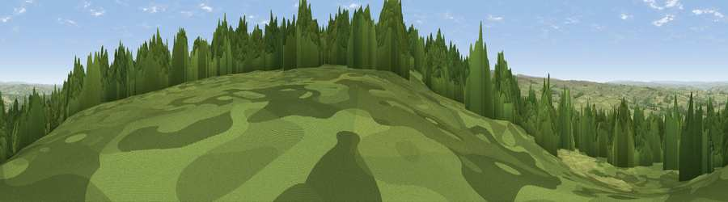

Viewpoint near Whitley Chapel
#11685 in England · top 23% of its area beats it · near Whitley ChapelWhere it is
The exact computed spot (NY 94325 55325). Click the marker for map links.
The view, rendered

A 360° render of this exact spot computed from the terrain model, tree cover and land cover — summer colours, afternoon light, calibrated against photographs of famous viewpoints. Real trees, hedges and buildings will differ in detail.
The panorama
Grey silhouette: terrain skyline in each direction (720 bearings, Earth curvature and refraction included). Dashed green: skyline with trees (+15 m) and buildings (+8 m) as obstacles. Blue strip: how far the ground is visible on each bearing.
Where the view opens
Wedge length = distance to the farthest visible ground on that bearing (vegetation-aware). Rings at 10, 25 and 50 km.
What fills the view
55% grassland · 40% woodland · 5% cropland
Angular shares of the visible panorama (visual magnitude), not map area. Landscape diversity 0.38 (0–1 Shannon).
Key numbers
More beautiful places nearby
The staircase of upgrades: each row has a higher view potential than everything closer. Driving times are estimates from straight-line distance, calibrated against real road routing — check an actual route before setting out.
| Place | Direction | Drive | Score |
|---|---|---|---|
| Viewpoint near Blanchland | S · 2 km | ~5 min | 67.7 |
| Viewpoint near Whitley Chapel | SW · 5 km | ~10 min | 68.2 |
| Watson's Pike | WSW · 6 km | ~12 min | 68.3 |
| Viewpoint near Slaley | E · 6 km | ~13 min | 69.8 |
| Viewpoint near Rookhope | S · 10 km | ~19 min | 70.4 |
| Viewpoint near Fourstones | NNW · 13 km | ~24 min | 71.4 |
| Collier Law | SSE · 15 km | ~27 min | 71.7 |
| Viewpoint near Allenheads | SW · 16 km | ~28 min | 74.6 |
54.89263, -2.09000 · source: screening · position refined by local search. Computed location — check access rights before visiting.